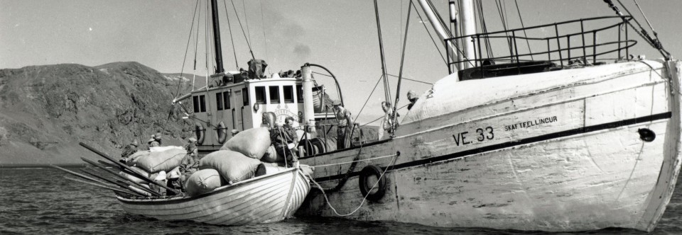

Skaftfellingur og verslun
við Skaftárós á Meðallandsfjörum
Skaftfellingar þurftu um margar aldir að fara í langar og erfiðar ferðir til að komast í verslun. Lengst af fóru þeir til Eyrarbakka eða austur á Papós til að sækja vörur. Árið 1884 kom fyrsta vörusendingin til Víkur og hófst þar með verslun þar. Upp úr aldamótunum 1900 fóru menn að velta fyrir sér möguleikum á að fá vörur fluttar með skipi að Skaftárós. Ekki er kunnugt um að menn hafi reynt að róa að staðaldri til fiskjar frá Skaftárósi fyrir aldamótin 1800 en eftir aldamótin eru kunn nöfn manna sem stunduðu sjóróðra frá Skaftárós. Voru þessir menn frá Hunkubökkum, Syðri-Steinsmýri, Eystra-Hrauni og Seglbúðum. Stunduðu þeir þessa iðju langt fram eftir nítjándu öldinni. 1 Það var því alls ekkert fráleitt að hefja siglingar með vörur að Skaftárósi og 1908 var Skaftárós löggiltur verslunarstaður.
Samþykkt var á sýslufundi 1916 að safna fé til kaupa á báti til að flytja vörur frá Reykjavík að Vík, Skaftárósi, Hvalsíki og Ingólfshöfða. Lögðu margir hönd á plóginn, voru jafnvel dæmi um að unglingar leggðu af því sparifé sínu til að kaupa bát. Var safnað í Mýrdal, Skaftárhreppi og í Öræfum. Lagði Kaupfélag Skaftfellinga 500 kr, til kaupanna en gildir bændur á bilinu 100-700 kr.
Árið 1917 komu menn saman til að samþykkja frumvarp til laga fyrir Hlutafélagið Skaftfelling og ákváðu að báturinn skyldi heita Skaftfellingur. Formaður stjórnarinnar var kosinn Lárus Helgason Kirkjubæjarklaustri og gegndi hann því embætti þar til hann lést 1941. 2 Vorið 1918 hóf Skaftfellingur vöruflutninga.
